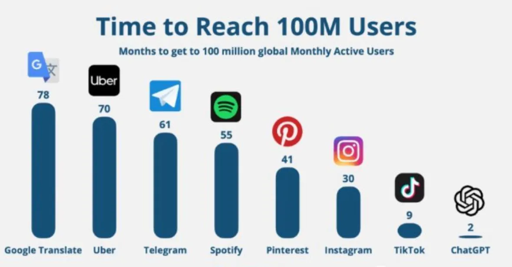

What Threads reveals about network effects
Originally posted on LinkedIn, July 7, 2023.
Meta’s new Twitter competitor, Threads, launched about 48 hours ago and has already reached 60 million users. It is moving quickly toward 100 million, breaking the product adoption record ChatGPT set only recently.
How long did other products take to reach 100 million users?
- Spotify: 55 months
- Pinterest: 41 months
- Instagram: 30 months
- TikTok: 9 months
- ChatGPT: 2 months
- Threads: 4 days
In this case, the connection between adoption speed and product value is weak. GPT introduced something genuinely new and changed what software could do. Threads does not offer a similar breakthrough. We have already seen social networks launch without additional value and fail, including Google+.
The open question is whether people will accept another social network they need to maintain, or whether the initial buzz will disappear as quickly as it arrived.
One of the standard lessons in business school is the power of network effects. Once a network reaches the mainstream, it becomes almost impossible to beat. Fixed-line telephone networks such as AT&T in the United States and Bezeq in Israel are good examples. People came to see them as the only way to make phone calls, and because everyone used the same infrastructure, building a competing network became nearly impossible. What is less commonly remembered is that they were not the only companies trying to build telephone networks at the beginning. They simply won.
Products age several times faster now, and networks have shorter shelf lives. Facebook became an apparently impenetrable monopoly, then grew less popular and less relevant within a decade. Even dominant networks do not last forever.
Low barriers to entry and the ability to enter international markets without a physical presence are creating new patterns in digital markets. A product can now reach more than 1 million customers in a matter of days.
